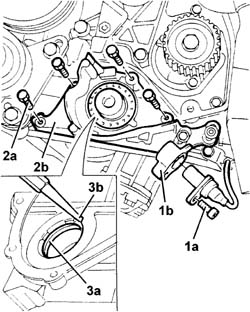
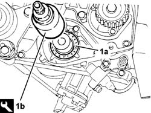

1020D10 front crank shaft oil seal cover - r + r and replace seals with timing belt removed
- Path
- Procedures > 10 ENGINE > 1020 CRANKCASE SUMP AND COVERS > 1020D OIL SEALS ON CRANKSHAFT > 1020D10 front crank shaft oil seal cover - r + r and replace seals with timing belt removed
- Kind
- repair procedure (removal / refitting; the operation number is the code)
- Applies to
- all engines; all production periods
- Interactive page
- https://sloeber94.github.io/elrnDB-fDbl/en/#/2584342
Applies to: all engines; all production periods
 Removing
Removing
 Refitting
Refitting1032B44 toothed drive pulley - r + r with timing belt removed
1020A20 crank case oil sump - r + r clean seals for sealant application
1. Unscrew bolt (1a), withdraw rpm sensor (1b) from its seat and move aside.
2. Undo the bolts (2a) and remove the crankshaft front oil seal cover (2b), complete with gasket and oil seal.
3. Working at the bench, remove oil seal (3a) by inserting drift (3b) in the groove on the inner service of the cover.

Applies to: all engines; all production periods
Refitting
RemovingFit the crankshaft front cover, complete with a new gasket, and fix it tightening the bolts to the recommended torque.
 | Fastening | Component | Ø | Value (daNm) |
|---|---|---|---|---|
- | Bolt | CRANKSHAFT FRONT COVER | M6 | 0.9 |
Replace the rear wheel rpm sensor in its housing and fix it using the bolt.
1. Fit a new oil seal (1a) using the tool (1b).
 | Name | Country |
|---|---|---|
1b | Fitting tool | 1.860.878.000 |

Applies to: all engines; all production periods
1020A20 crank case oil sump - r + r clean seals for sealant application
1032B44 toothed drive pulley - r + r with timing belt removed
Topics linked from this page (2)
- 1020A20 crank case oil sump - r + r clean seals for sealant application
- 1032B44 toothed drive pulley - r + r with timing belt removed